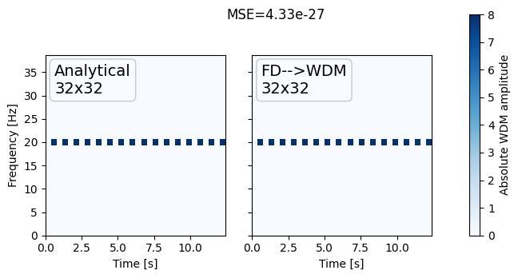
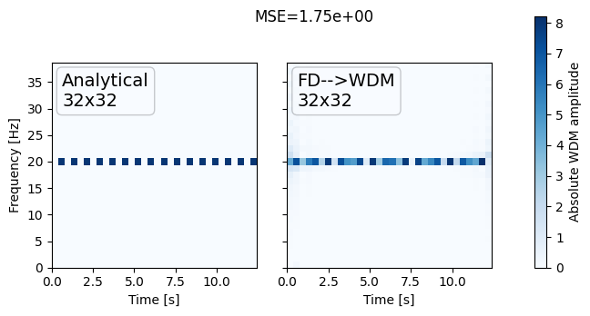
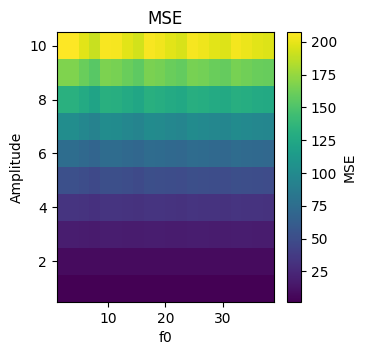
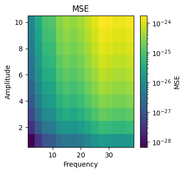

Backend Accuracy checks#
! pip install pywavelet -q
from pywavelet.types import Wavelet, FrequencySeries, TimeSeries
from pywavelet.types.wavelet_bins import compute_bins
from dataclasses import dataclass
import numpy as np
import matplotlib.pyplot as plt
from matplotlib.colors import Normalize, LogNorm
@dataclass
class Params:
f0: float = 20
dt: float = 0.0125
A: float = 1
Nt: int = 32
Nf: int = 32
@property
def list(self):
return [self.f0, self.dt, self.A, self.Nt, self.Nf]
def __repr__(self):
return f'f0={self.f0}, A={self.A}'
def monochromatic_wnm(
f0: float,
dt: float,
A: float,
Nt: int,
Nf: int,
) -> Wavelet:
T = Nt * Nf * dt
N = Nt * Nf
t_bins, f_bins = compute_bins(Nf, Nt, T)
wnm = np.zeros((Nt, Nf))
m0 = int(f0 * N * dt)
f0_bin_idx = int(2 * m0 / Nt)
odd_t_indices = np.arange(Nt) % 2 != 0
wnm[odd_t_indices, f0_bin_idx] = A * np.sqrt(2 * Nf)
return Wavelet(wnm.T, t_bins, f_bins)
def monochromatic_timeseries(
f0: float,
dt: float,
A: float,
Nt: int,
Nf: int,
) -> TimeSeries:
ND = Nt * Nf
t = np.arange(0, ND) * dt
y = A * np.sin(2 * np.pi * f0 * t)
return TimeSeries(data=y, time=t)
default_params = Params()
def plot_comparison(params):
true_wdm = monochromatic_wnm(*params.list)
true_tdm = monochromatic_timeseries(*params.list)
fdm = true_tdm.to_frequencyseries()
wdm = fdm.to_wavelet(Nt=params.Nt, Nf=params.Nf)
mse = np.mean((wdm.data - true_wdm.data) ** 2)
fig, ax = plt.subplots(1, 2, figsize=(7, 3.5), sharex=True, sharey=True)
norm = Normalize(vmin=0, vmax=wdm.data.max())
kwargs = dict(absolute=True, norm=norm, cmap='Blues', show_colorbar=False)
true_wdm.plot(ax=ax[0], **kwargs, label='Analytical')
wdm.plot(ax=ax[1], **kwargs, label='FD-->WDM')
ax[1].set_ylabel('')
# set common colorbar using norm
sm = plt.cm.ScalarMappable(cmap='Blues', norm=norm)
sm.set_array([])
fig.colorbar(sm, ax=ax, orientation='vertical', label='Absolute WDM amplitude')
fig.suptitle(f'MSE={mse:.2e}')
# tight layout whle accommodating suptitle + colorbar
fig.tight_layout(rect=[0, 0, 0.8, 0.95])
plt.show()
plot_comparison(Params(f0=20, A=1))
plot_comparison(Params(f0=20.1, A=1))


Namp, Nfreq = 10, 20
amplitudes = np.linspace(1, 10, Namp)
f0s = np.linspace(2, 38, Nfreq)
errors = np.zeros((Namp, Nfreq))
for i, A in enumerate(amplitudes):
for j, f0 in enumerate(f0s):
p = Params(f0=f0, A=A)
true = monochromatic_wnm(*p.list)
wdm = (
monochromatic_timeseries(*p.list).
to_frequencyseries().
to_wavelet(Nt=p.Nt, Nf=p.Nf)
)
errors[i, j] = np.mean((wdm.data - true.data) ** 2)
fig, ax = plt.subplots(1, 1, figsize=(3.5, 3.5))
# plot grid of errors as a function of amplitude and frequency
c = ax.pcolormesh(f0s, amplitudes, errors)
ax.set_xlabel('f0')
ax.set_ylabel('Amplitude')
ax.set_title('MSE')
fig.colorbar(c, ax=ax, label='MSE')
<matplotlib.colorbar.Colorbar at 0x1208c54b0>

Namp, Nfreq = 10, 20
amplitudes = np.linspace(1, 10, Namp)
default_wdm = monochromatic_wnm(*default_params.list)
# arrange f0s such that the bin is an integer multiple of Delta_F
f0s = default_wdm.freq[2::2]
# get midpoints of f0s
Nfreq = len(f0s)
errors = np.zeros((Namp, Nfreq))
for i, A in enumerate(amplitudes):
for j, f0 in enumerate(f0s):
p = Params(f0=f0, A=A)
true = monochromatic_wnm(*p.list)
wdm = (
monochromatic_timeseries(*p.list).
to_frequencyseries().
to_wavelet(Nt=p.Nt, Nf=p.Nf)
)
errors[i, j] = np.mean((wdm.data - true.data) ** 2)
fig, ax = plt.subplots(1, 1, figsize=(3.5, 3.5))
# plot grid of errors as a function of amplitude and frequency
c = ax.pcolormesh(f0s, amplitudes, errors, norm=LogNorm())
ax.set_xlabel('f0')
ax.set_ylabel('Amplitude')
ax.set_title('MSE')
fig.colorbar(c, ax=ax, label='MSE')
<matplotlib.colorbar.Colorbar at 0x12035a110>

f0s
array([ 2.5, 5. , 7.5, 10. , 12.5, 15. , 17.5, 20. , 22.5, 25. , 27.5,
30. , 32.5, 35. , 37.5])
default_wdm.freq
array([ 0. , 1.25, 2.5 , 3.75, 5. , 6.25, 7.5 , 8.75, 10. ,
11.25, 12.5 , 13.75, 15. , 16.25, 17.5 , 18.75, 20. , 21.25,
22.5 , 23.75, 25. , 26.25, 27.5 , 28.75, 30. , 31.25, 32.5 ,
33.75, 35. , 36.25, 37.5 , 38.75])